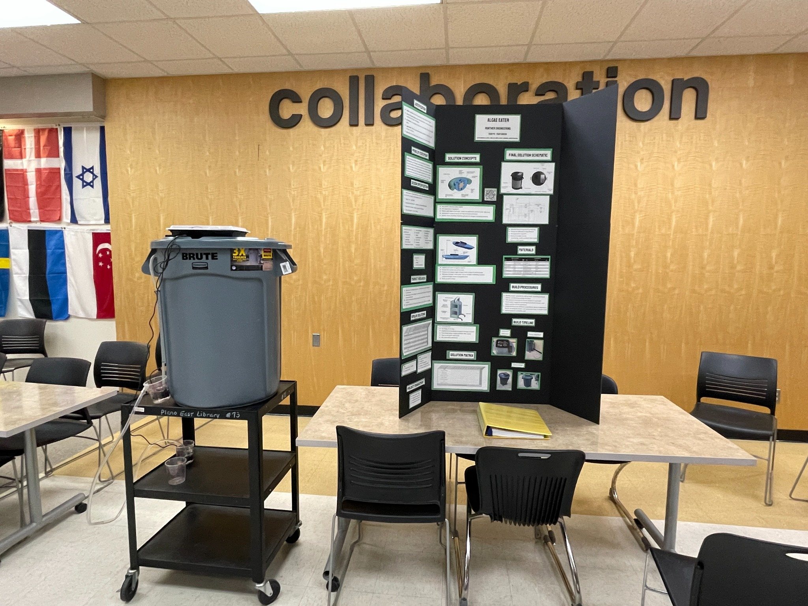
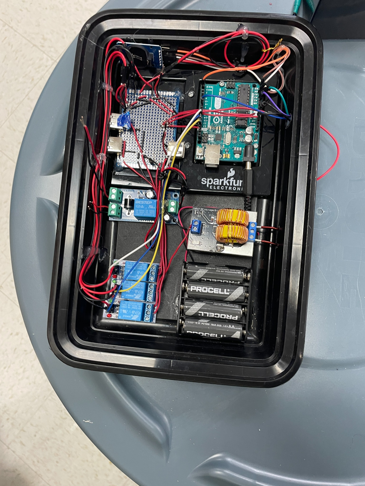
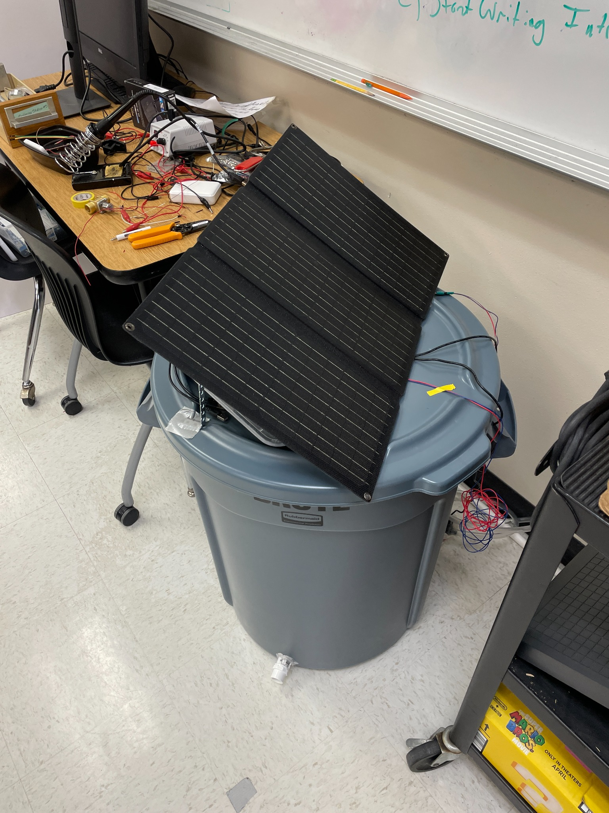
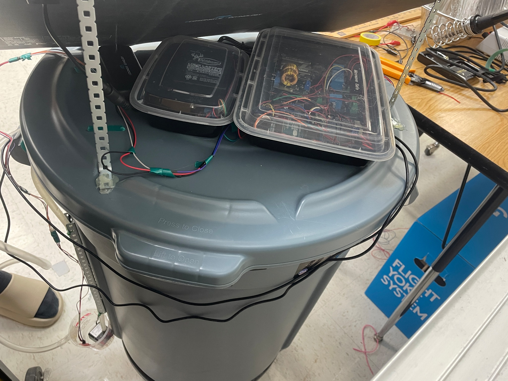
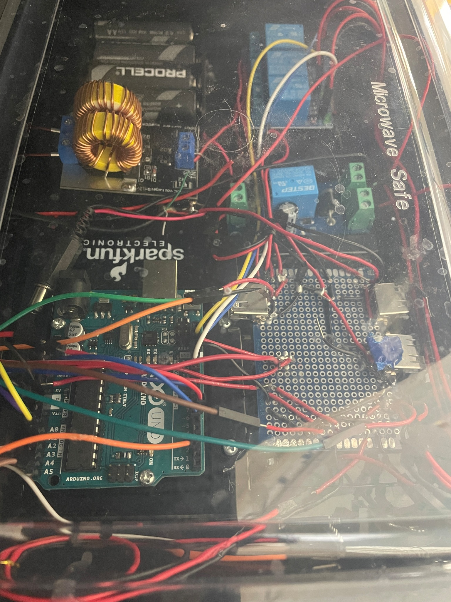
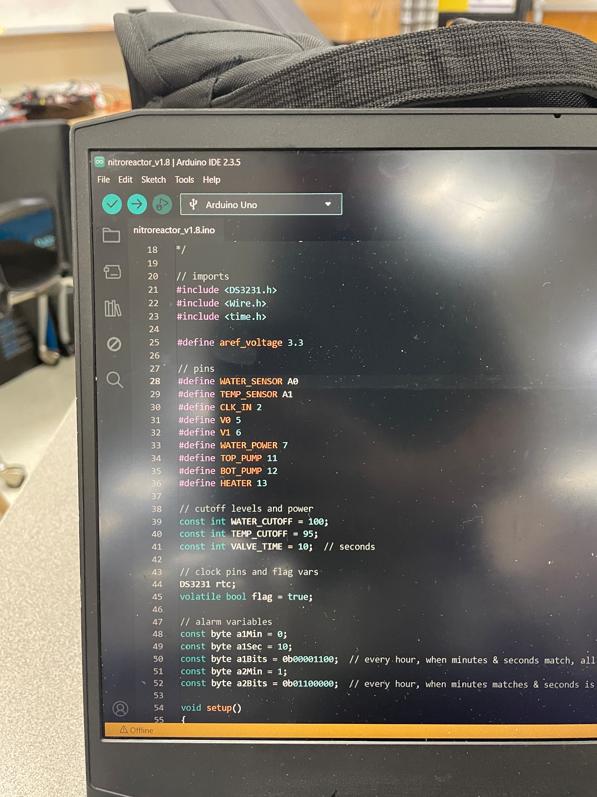
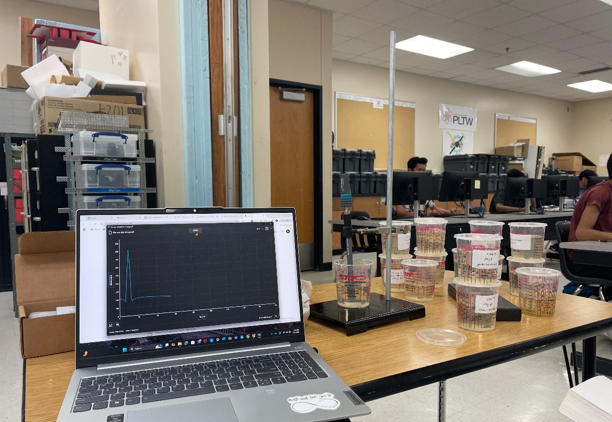

The Algae Eater
Solar-powered denitrification bioreactor. Electrical integration of an Arduino, pumps, sensors, valve, and heater with a UPS-backed battery.
Denitrifying bacteria remove nitrogen compounds from pond water. An Arduino, pumps, sensors, a valve, and a heater support the process, powered by a solar panel and UPS-backed battery.







